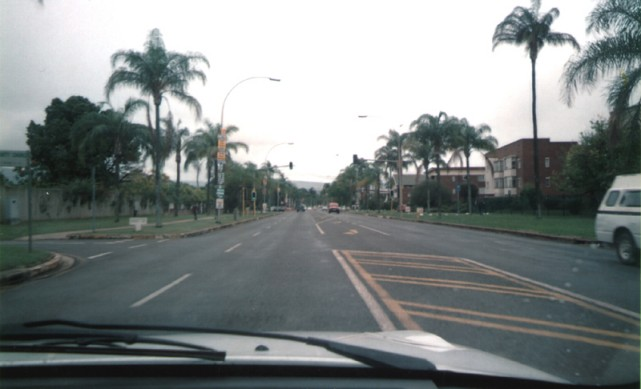
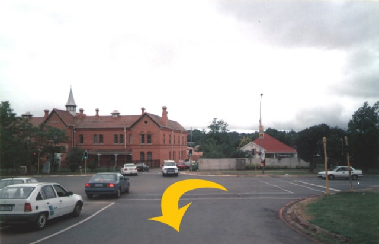
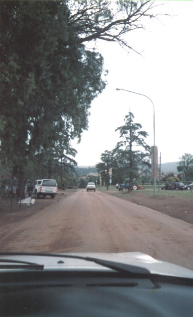
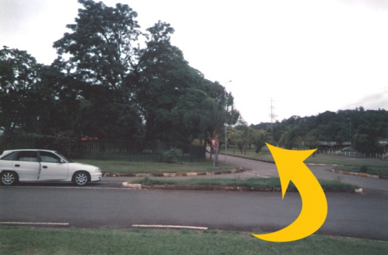
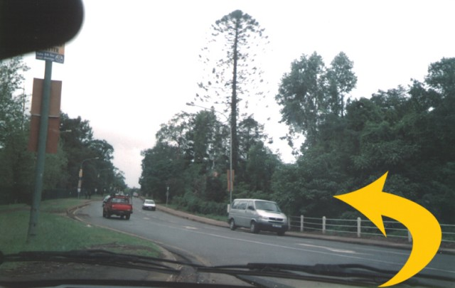
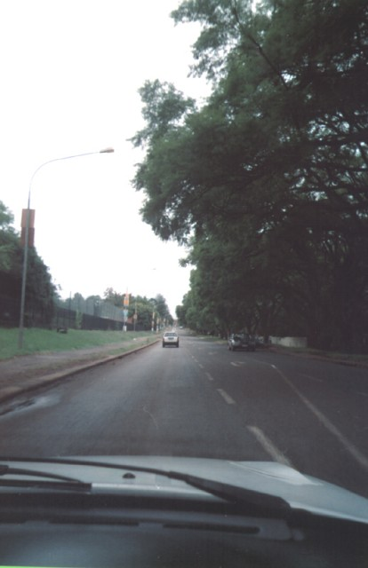

Return to racingcircuits.net's Photo Archive Main Index
Alexandra Park - Alexandra Road to College Road
|| Contents | Alexandra Road to College Road | Angels Angle to Final Corner || Home ||
Click on the hyperlinks above to view photographs of that
section.
The numbers and arrows on the map represent the location of where each of the
photographs were taken.
Return to racingcircuits.net's Photo
Archive Main Index

01 - Main Straight on Alexandra Road.

02 - Looking back towards Barracks Bend from Alexandra Park. Notice the old police
barracks in the background.

03 - Alexandra Park straight.

04 - Left before Suicide Bend.

05 - Suicide Bend, going left into College Road.

06 - College Road.
Photographs and text ©Paul Minnaar. Reproduced here with kind permission. Additional information kindly supplied by Marius Matthee.